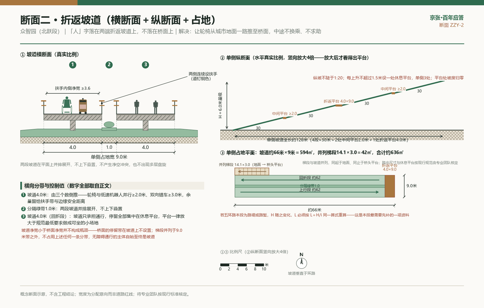

02
三处重点区域详细设计 南问·鸣钟之门 / 中答·应答原点 / 北跃·人字之跃 Detailed design of the three key areas
三处重点区域在9公里长卷上各任一段叙事：大钟寺是南问，清华园车站是中答，众智园是北跃 depth:three_key_area_detailed_design。三处重点区的设计陈述分两类，读时请分开看：一类不随任何官方资料改变 ——红线、权属、文保范围与竖向资料无论怎么变，它都成立，这类句子在各段就地标出；另一类须在资料到位后按 A-RECALC-001 逐项重算，凡带尺寸的数字都属于后者 。三区共用官方面积口径：众智园192.1公顷、AI原点社区104.3公顷、大钟寺72.0公顷；提交图层沿用临时粗略范围，不作为官方红线或精确面积依据 data:geometry/key_areas.geojson#PROV-KEY-002。
重点片区 叙事角色 概念地标 活动主场 证据引用 大钟寺（72.0公顷口径） 南问·鸣钟之门 应答钟与钟声广场、四象限声波径 商业路演、敲钟仪式、3月路演季 data:geometry/key_areas.geojson#PROV-KEY-003AI原点社区（104.3公顷口径） 中答·应答原点 素广场、应答簿、零公里桩（待文物部门协商概念选点） 3·25公益纪念开放日、毕业礼 data:geometry/key_areas.geojson#PROV-KEY-002众智园（192.1公顷口径） 北跃·人字之跃 人字天桥概念节点、清河蓝绿十字 测试验证、进化日、未来之问 data:geometry/key_areas.geojson#PROV-KEY-001
720,454.219
大钟寺片区面积 · m²
key_area_dazhongsi_area_sqm
0.063127
大钟寺片区占比 · 比值
key_area_dazhongsi_ratio
0.0631
大钟寺相对公告面积偏差 · %
key_area_dazhongsi_area_deviation_percent
1,043,236.909
AI 原点社区面积 · m²
key_area_ai_origin_area_sqm
0.091409
AI 原点社区占比 · 比值
key_area_ai_origin_ratio
0.0227
AI 原点社区相对公告面积偏差 · %
key_area_ai_origin_area_deviation_percent
1,929,201.877
众智园片区面积 · m²
key_area_zhongzhiyuan_area_sqm
0.169038
众智园片区占比 · 比值
key_area_zhongzhiyuan_ratio
0.427
众智园相对公告面积偏差 · %
key_area_zhongzhiyuan_area_deviation_percent
三处片区面积与公告口径的偏差已逐项登记（0.0227%—0.427%），偏差来源是临时边界较真实京张廊道东偏、三处质心距同名真实地物 1.9—2.7 公里，方案公开披露该偏差。
02·A 大钟寺 AI 产业聚集区 = 鸣钟之门（南问段）大钟寺AI产业聚集区=鸣钟之门（南问段）。 概念核心是"应答钟与钟声广场"：一方开敞圆形广场，地面以同心声波环铺装向外扩散（Logo母题的地面放大），圆心立取京张桁架语汇的钢结构钟架——工字钢、铆钉节点、道钉形收头，架下悬一口当代新铸 的青铜应答钟；1733年始建的大钟寺古建群在远景中完整独立，与新钟架之间以绿化缓冲带和步道明确拉开距离，一古一今、遥遥相望而非贴身并置 source:DZS-MUSEUM-2021。铁律有二：其一，应答钟与古钟博物馆及其馆藏文物仅为文化呼应关系，绝不敲击、绝不移动、绝不商业化使用任何文物古钟 ；其二，大钟寺为全国重点文物保护单位，钟架与广场一律退出文物保护范围及建设控制地带，具体选点、退让距离与体量控制均为待文物主管部门协商的概念建议 ，钟架高度以不高于周边行道树冠层为控制意向，绝不与古建争夺天际线。带内企业每达成一个可公开核验的里程碑事件即可预约敲钟一响，敲钟资格与可公开核验事件绑定：事件类型开放，但须有政府、交易所或其他第三方的公开可查记录（如大模型完成备案、新模型发布并备案、企业上市），记录事实、不背书企业。四条"声波径"从广场辐射进地铁13号线大钟寺站周边四个象限，缝合被道路切分的步行流线（流线组织为概念建议，交通方案待专业团队深化）data:geometry/public_space.geojson#PUBLIC-001。商业路演、敲钟仪式、道钉安装仪式全部集中于本段与众智园段承接。
实施三步：按"依赖什么条件"分步，而不是按"做多大"分步。 分步依据是前置条件的可控性，因此第一步完全不依赖用地条件，可与更新程序并行推进 depth:phasing_implementation。第一步"先把路走通" ：内容为既有过街点的一次过街到位改造、桥下通廊、四条声波径的标线与铺装级贯通、导览应答桩与断点客厅家具组布点；前置条件是桥梁管养单位使用许可、道路管理单位的过街改造许可、桥下现状停车使用主体的清退或规范协商；角色建议由区级更新统筹部门牵头，道路与桥梁管养单位、轨道运营单位、属地街道与社区参与；验收以绕行系数、过街等待时间、桥下通廊日均步行量的改造前后实测对比为准。第二步"把广场腾出来" ：内容为1.0公顷集中公共开放空间落位与建设、钟架与仪式核心、广场边界断面；前置条件是一宗低效用地更新进入实施程序并在出让条件中写入配比与"集中"判据、文保范围与建设控制地带官方矢量边界取得并完成协商、地下轨道与管线避让核查完成；角色建议为规划自然资源主管部门定出让条件、文物主管部门定退让与风貌、更新实施主体建设、区级更新统筹部门统筹；验收以广场建成即开放、开放时间与管理主体已公示为准。第三步"让它响起来" ：内容为应答钟铸造安装、敲钟事件受理机制、S4场景上线；前置条件是敲钟事件的可核验判据与受理规则经主管部门确认、噪声评估通过并与东南居住象限完成沟通、S4的无AI等价通道就位；验收以首次敲钟事件完成归档且可公开查询为准。
现状诊断：四条痛点在大钟寺站域各有精确落点。 南问段的设计前提是一句实话——这里没有可供落笔的空地，只有可供重组的既有空间。公开地图数据显示，大钟寺周边约0.9×0.85公里（约76.5公顷）范围内建筑逾50栋、基底合计约15公顷，基底覆盖率约两成、单栋基底均值约3000平方米 source:OSM-ODBL-2026。这个均值说明的是问题的性质：站域由卖场与板式办公构成，是大盘子街区而非小街坊 ——街墙连续、首层开口少、地块内部不可穿行。四条痛点由此各有落点 source:PARK2-OPEN-2026 depth:existing_conditions_diagnosis。
其一，南北向屏障不可开口 ：京包铁路老路基与13号线高架在站东约50至130米处自北向南连续贯穿，东西向的穿越机会只能出现在既有道路跨越点上，不可能在路基上随意增设开口——这决定了本段所有缝合动作都是"用足既有穿越点"，而不是"新增穿越点"。其二，围墙把短距离拉成长绕行 ：站东的明光西路（距站约74米）与站西的四道口北街（距站约269米）最近处东西直线相距仅约270米，却分属铁路走廊两侧、各自被地块围墙封闭。其三，东西向通行受阻的方向最不巧 ：站东南侧明光路、明光东路一组在公开地图数据中均为居住性道路，是站域最可能的通勤起点侧，而就业与商业集中在西侧与北侧，日常最强的东西向流线恰好正对屏障。其四，桥下带子压在主流线上 ：北三环主路在站西约790米至约110米之间为高架（即北三环西路与中关村东路—皂君庙路相交的立交，习称联想桥），长约680米，其东端落地点距地铁站仅约110米——被停车占满的桥下空间，正压在站厅通往西侧街区的步行主流线上 source:OSM-ODBL-2026。
站城关系：钟声广场是大钟寺站的"地面第二站厅"。 本段把广场定义为交通设施的延伸而非景观点缀——13号线大钟寺站为高架站、站厅规模有限，站前空间目前被辅路、桥下停车与地块围墙瓜分，换乘、集散、等候三件事全部挤在人行道上。广场要做的是把这三件事从人行道与辅路边挪进一块专门的地面空间，这也是"两心"之一的大钟寺中心在地面上最直接的空间兑现 source:HD-CTRL-PLAN-2026 data:geometry/key_areas.geojson#PROV-KEY-003。落到设计上是三条硬要求：广场外环朝向站厅的一段做成"等候面"，风雨棚、信息屏与座椅成组布置，让等人等车的行为离开人行道；四条声波径的起点在广场外环上按四个方位定位，与站厅出入口之间保证一次连续、不二次过街的步行联系；非机动车停放与低速配送机器人待机位统一收进广场外环缓冲带，不占声波径通行净宽。需要如实说明的是，第二条要求只有广场所在的象限能在一期做到：西北向须横跨三块板的三环走廊，东南、东北两向还叠加不可穿越的铁路走廊，这三向的"不二次过街"只能作为分期目标，不能写成一期承诺。
四象限缝合：先判断哪个象限该放广场，再给各自的针法。 广场选址不指定地块，但给出可核算的五条判据，专业团队据此在权属清单上套图即可收敛：退出文物保护范围与建设控制地带；位于13号线站厅步行五分钟等时圈内；至少两面贴邻既有城市道路的人行界面；四条声波径的起点均能落在广场外环上，且其中不少于两条不跨越铁路走廊即可抵达所服务的象限；来自低效用地更新腾退，不新增征地。五条判据同时满足度最高的是西南象限 ——13号线站厅的两处出入口均位于铁路走廊以西、北三环以南，广场落在此侧则出站即达、无需跨三环也无需跨铁路，且距文保范围最远，建议优先在该象限的更新中落实。权属条件不允许时的退让次序及其理由一并写明：东南象限（日常使用需求最强，但到站厅须跨铁路走廊）、西北象限（可用净地最少且退让要求最严）、东北象限（为绿廊本体，不宜以广场置换公园）data:geometry/public_space.geojson#PUBLIC-001。
西南象限（站厅同侧，广场首选载体） ：现状问题是出站向西的流线一出闸机就撞上高架落地段，人被挤在辅路侧石与停车之间。缝合手法是把流线从辅路边挪进桥下 ——将高架东端连续空间改为受管理的公共通廊（见断面三），使"站厅→广场"全程在结构遮蔽下、与机动车物理分离。这是本段最短、最省、见效最快的一针，且不依赖任何用地条件。东南象限（居住侧，日常使用强度最高） ：现状问题是居民到站厅要先向北穿越北三环南辅路、再沿铁路走廊西侧绕行。手法不是新增穿越，而是把现有的一次穿越做透 ——在最靠近站厅的既有过街点做"一次过街到位"改造（见断面一），并把沿线围墙改为可管理开口（社区侧可设时段管理，非全时开放也算通）。验收用绕行系数（实走距离÷直线距离），目标不大于1.5。西北象限（文保侧，只做减法） ：1733年始建的大钟寺古钟博物馆为全国重点文物保护单位，位于本象限 source:DZS-MUSEUM-2021。此象限不进任何新增构筑 ——钟架、广场、装置一律排除，缝合动作只有三项：既有街墙首层增设向公园方向的步行开口、沿大钟寺东路人行道拓宽并把灯杆指示牌归位进设施带、维护从公园主步道望向古建群方向的视线通廊不新增遮挡。东北象限（绿廊本体与其东侧街坊） ：二期建成后南北慢行已在绿廊内贯通 source:PARK2-OPEN-2026，问题只在绿廊与三环、绿廊与东侧街坊之间的围栏分隔——园里走得通，园外进不来。东北向声波径要同时跨越三环与铁路走廊，是四条中最难的一条，本方案不强求一期贯通，而是先把终点做实 ：在绿廊东侧边界靠近三环处设一座应答门（沿用全线标准套件），把东侧街坊直接接进绿廊，绿廊本体断面维持现状、不因广场而改造；出入口以实际建成位置为准 source:PARK2-PLAN-2024 data:geometry/roads.geojson#ROAD-003。
钟声广场平面组织：三条同心环带把1.0公顷分完，同心环是图案不是台阶。 广场约100米见方、1.0公顷，地面以同心声波环铺装向外扩散 data:geometry/public_space.geojson#PUBLIC-001。三个环带的划分不是构图偏好，而是由使用强度与设施荷载定的，面积可逐项复算：
环带 尺度 面积 功能与做法意向 仪式核心 直径约30米 约700平方米 钟架居中；不设固定座椅与树池，保证敲钟与观礼净空；地面预埋可拆卸旗杆基座、临时护栏地脚与转播机位插座，日常封盖与铺装齐平 日常活动环 直径30至70米，环宽约20米 约3100平方米 广场主要使用面；声环座椅沿环线断续布置、每段坐3至4人并留轮椅停靠位；乔木沿环切线成组种植、不进入内环视线；朝站厅一段做"等候面"，配风雨棚与信息屏 边界缓冲带 直径70米外至广场边界，进深自边中点约15米向转角放大至约35米 约6200平方米 消化与城市道路的高差、雨水滞蓄（下凹绿地与透水铺装）、非机动车停放与机器人待机；转角放大处正好容纳停放与待机，不挤占通行
三条环带合计恰为10000平方米。关键构造纪律只有一条，且不随任何官方资料改变：同心环之间不得出现高差 ——三带以铺装质感与色带区分，全场无台阶，环向拼缝做密缝、缝宽按现行无障碍设计标准的地面缝隙上限从严取值，避免卡住轮椅前轮与拐杖尖 standard:BARRIER-FREE-ENVIRONMENT-LAW。
钟架与四条声波径：钟架不与任何既有物相连，声波径靠颜色而不靠凸起导向。 钟架为独立的四柱钢结构闭合框架，工字钢柱身、铆钉节点、道钉形收头，柱脚落在自身独立基础上，不依附、不搭接、不受力于任何既有建筑或古建 ；钟体自重与敲击时的冲击荷载由该独立基础承担（外撞式钟体本身不摆动，摆动的是撞木，动荷载来自撞击的水平分量），基础埋深与位置须先完成站域地下轨道结构与市政管线的避让核查，核查未完成前不得定桩。仪式核心取直径约30米不是构图取整，而是两项净空叠加的结果：内圈是外撞式撞木的水平操作与安全避让区，外圈是敲钟事件的观礼站位——按站立观礼的常规密度，约700平方米的核心可容纳一次仪式所需的观礼规模而不外溢到活动环，具体人数上限由专业团队按现行场所疏散要求核定。体量控制沿用不与古建争天际线的原则：钟架高度以不高于周边行道树成年冠层为上限意向，具体数值待专业团队按风貌与文保要求核定。在文物保护范围与建设控制地带的官方矢量边界取得之前，本方案以"钟架与广场一律不进入西北象限"作为可立即执行的替代约束；边界取得后再按协商结果给出确定退距。夜间照明不做泛光：线性地埋灯嵌在环缝内、亮度由内向外递减，让声波扩散在夜间同样可读；钟架只做贴附式结构轮廓洗亮、不设向上投射灯具；常规照度由环带外缘的冠下低杆灯提供；朝东南居住象限一侧加设遮光罩并从严控制该方向垂直照度；敲钟事件时内环临时提亮、事件结束即回落，不设常夜动态或彩色灯光。四条声波径的做法统一：铺装把同心环转为垂直于行走方向的平行波纹带、间距由密到疏提示离广场渐远，波纹靠面层骨料与颜色变化实现，一律不做凸起 ——凸起会绊人、卡轮椅、让低速机器人抖动。通行净宽不小于3.0米（可容一台轮椅与一台低速配送机器人错车），沿街段在净宽之外另加0.8至1.5米设施带（灯杆、树池、指示牌、机器人待机位统一进带），建筑退线段可再加0.5至1.0米界面活动带，总宽意向沿街段4.5至6.0米、穿地块内部段3.5至4.5米；纵坡控制意向不陡于1:20，转弯处内侧净空半径不小于1.5米，每约150米设一处宽约1.2米、长约3米的凹入让行港湾，落实"轮椅优先、机器人强制停让"。以上均为概念断面示意，不含工程结论。
三处概念断面（均为概念断面示意，不含工程结论，宽度为分配意向而非道路红线）。 三处对应本段最难的三种界面：穿越车行道、贴邻城市道路、桥下改造 depth:traffic_rail_slow_parking。
断面一 · 声波径穿越城市道路（以东南向径穿越北三环南辅路为例） 做法意向 现状条件 北三环走廊在站前为南辅路—主路—北辅路三块板，横向总宽约50至60米；主路于站西约110米处落地，站前一段为地面段 source:OSM-ODBL-2026 宽度分配 过街段总宽不小于6.0米：通行净宽4.0米，两侧各1.0米等候面；中央安全岛进深不小于2.5米，容一台轮椅与一台低速机器人同时候行而不越线 高差处理 全程无台阶，过街段路缘石做齐平处理（缘石高差降至与路面平），排水改由两侧线性排水沟承接，不用"缘石坡道加落差"解决 材料意向 过街段面层用与声波径同色的整体面层，与沥青路面形成色差，靠颜色而非凸起提示驾驶人 无障碍 两端各设宽0.6米触感提示带并与盲道系统连续；增设过街音响提示与延时按钮 standard:BARRIER-FREE-ENVIRONMENT-LAW 机器人兼容 机器人与行人同相位、同速度上限，不单设机器人相位；安全岛划机器人等待区标线 待专业深化 信号配时与渠化、缘石齐平后的排水与冬季除雪、主辅路交织段安全评估
断面二 · 广场边界与城市道路的界面 做法意向 总体主张 广场与道路之间不做围墙、不做抬高台地，用一条进深约15米的缓冲带把高差、雨水、停放、机器人待机全部消化在带内 宽度分配（自道路侧向广场侧） 既有人行道保留、设施带归位；外侧3.0至4.0米为非机动车停放与机器人待机（透水面层，标线与矮绿篱限定，不设高栏杆）；中段6.0至8.0米为下凹绿地带，承接广场硬质面雨水，乔木成组种植遮蔽道路；内侧3.0至4.0米为无台阶入口面，与广场外环铺装齐平 高差处理 广场与相邻人行道的高差全部在缓冲带内以不陡于1:20的缓坡消化；确需集中消化时设轮椅坡道（纵坡不陡于1:12并按标准设休息平台）并同步设台阶，不允许出现只有台阶的入口 standard:BARRIER-FREE-ENVIRONMENT-LAW 材料意向 缓冲带以透水铺装加种植土为主，与广场整体面层形成质感对比；边界用高差、绿篱与铺装变化限定，不用连续实体围墙 机器人兼容 声波径穿过绿带处通行净宽保持3.0米不被绿化侵占；外侧待机位就近接入既有市政供电，不新增独立机房 待专业深化 竖向与排水专项、雨水滞蓄容量核算、树种与土壤厚度
断面三 · 桥下空间由无序停车改为公共使用（以高架东端落地段为例） 做法意向 现状条件 高架段自站西约790米延伸至约110米处落地，长约680米，东端正压在站厅通往西侧街区的步行主流线上；现为无序停车占用 source:OSM-ODBL-2026 source:PARK2-OPEN-2026 结构纪律 现状桥墩轴线与承台原位保留、不做任何改动；新增设施与墩柱之间留检修间距不小于0.6米，一律不依附、不受力于桥体 宽度分配 通行区3.0至4.0米连续步行通廊，全程无台阶、与桥下现状地面找平；活动区4.0至6.0米，断点客厅家具组按墩柱开间成组布置、每开间只做一件事，不连续摆满，保证视线通透与消防通道 停车处置 不追求全部清退：清得掉的先清、清不掉的先规范（划线、限位、纳入统一管理），这是"先通后留"在桥下的具体做法 材料与照明 通行区用耐磨、防滑、易清洗的整体面层（桥板遮蔽、无雨水下渗需求，不用透水做法）；照明贴附桥板下缘、不落杆；桥下白天亦为暗区，按全天候通行标准从严取照度 无障碍 通廊纵坡随现状地面、控制意向不陡于1:20，与两端人行道衔接处齐平；通廊在高架落地端因桥板下缘净高递减而自然终止，终止点由实测净高确定，不强行贯通至落地点 ，终止处以护面包覆与警示标识收头 机器人兼容 通廊是本段唯一有连续遮蔽的段落，定为低速机器人雨雪天气优先通行段；活动区一侧设充电与待机位 待专业深化 桥梁管养单位使用许可与安全边界、现状停车权属与使用主体、消防与疏散、结构检测与限载
断面与人视图册（点击放大）
断面一 · 声波径穿越城市道路 （概念断面示意）
断面二 · 钟声广场边界与城市道路的界面 （概念断面示意）
断面三 · 桥下空间由无序停车改为公共使用 （概念断面示意）
街道人视示意 · 桥下通廊 （大钟寺·南问段）
沿街界面与更新机制：把"四分之一"变成能验收的空间要求。 本片区低效商业用地经"政府统筹加社会资本参与加挂牌出让"转型科技办公与创新交往、并明确要求提升绿化景观与完善步行系统，已有公开先例可循 source:LJLJ-RENEWAL-2026。正文已提出在后续更新中按不低于地块四分之一预留约1公顷集中公共开放空间的机制建议，这里补三条使其可验收：其一，"集中"必须有判据 ——该空间应为单一连续用地、短边不小于90米、不被市政道路或车行出入口切分。90米不是拍出来的：直径70米的日常活动环外缘两侧各需不少于10米缓冲进深，短边小于90米则上文的同心环体系无法成立，四分之一的配比就会退化成几条沿街绿带，达不到广场的作用；其二，兑现顺序 建议公共开放空间与地上开发同步设计、先于地上主体交付投入使用，避免楼建完了广场还是工地；其三，开放义务 建议在出让条件中一并明确开放时间、管理主体与不得封闭的责任。本方案只定义机制与验收口径，不指定地块、不处置任何主体的权属与开发安排 depth:renewal_project_list。沿街界面的底层活力同样落成两条可查指标而非态度：沿声波径与广场边界的街段，首层每不大于30米应出现一处向街开口（门或可开启界面）；首层功能采用负面清单 而非正面清单——广场边界与声波径沿线首层不布置无人值守设备房、车库出入口、封闭仓储与整段封闭展厅，允许什么交由市场决定。要素服务驿站在本段设一处、贴广场外环布置，作为广场的室内延伸，并保留人工窗口 standard:ELDERLY-SMART-TECH-PLAN-2020-45。
投资量级只给基数与资金渠道分档，不给金额——这是资料缺口，不是省略。 可直接交付估算的工程量基数是确定的：广场硬质与绿化10000平方米（仪式核心约700、日常活动环约3100、缓冲带约6200平方米）、桥下通廊按高架东端约680米中实际可改造段计长、四条声波径按各自到达第一个生活目的地的长度计、断点客厅家具组按墩柱开间数计、钟架一处、导览应答桩两处。单价须取自公开造价指标（园林绿化与市政工程投资估算指标、住房城乡建设主管部门定期公布的工程造价指标），本提交包未登记造价类来源，故本方案不填单价、不给金额区间 ；补齐一套公开造价指标后，上述基数可直接推进到分项投资估算表深度。在没有单价的前提下仍可给出对实施更具决定性的资金渠道分档：第一步为设施级投入，工程量以线性米与家具件数计，可由日常维护与小微更新渠道消化、无需独立立项；第二步为场地级投入，随更新地块一并实施、不单独占用财政；第三步为项目级投入，须独立立项，且钟体为单件定制、造价离散度高，不宜与前两步打包报批。
S4「钟声广场·四象限换乘慢行助手」的落位、判据与退出条件。 S4不新增设备类型，全部沿用全线标准化组件库的导览应答桩，点位共两处有源、四处无源：广场外环"等候面"设主机位一处，桥下通廊中段设副机位一处（服务西向流线并兼作雨雪天气信息点），四条声波径起点各设一处无源方向应答牌（仅铺装嵌字与触感标识，不带屏、不带传感器）。设备意向为屏、扬声器、实体按键与近场触点的组合，副机位因桥下反光与易损而去屏、保留语音与实体按键；供电与通信接入既有市政管线、不新增独立机房 depth:municipal_new_infrastructure。服务内容须写清楚，否则不知该预留什么条件：回答"去某地从哪个口出、走哪条径、多久、有没有台阶"，并给出分人群路径（轮椅与推车路径避开全部台阶与陡坡、雨雪路径优先桥下通廊、夜间路径优先照明连续段），播报四条声波径的当前可用状态（施工封闭、活动占用、机器人密集时段）；输出一律带AI生成标识，交通建议为参考、非审定方案 standard:GENERATIVE-AI-INTERIM-MEASURES。上线前置条件是无AI等价通道就位——同一信息以固定印刷版四象限步行图加触感标识常设于桩体，语音播报与大字模式常开，任一时刻AI服务不可用时固定版信息仍完整可读；做不到即不得上线 standard:ELDERLY-SMART-TECH-PLAN-2020-45 standard:BARRIER-FREE-ENVIRONMENT-LAW。
验收判据五条，全部可测可复核：四个象限的绕行系数不大于1.5，且轮椅路径与步行路径的绕行系数之差不大于0.2（即轮椅不比走路绕得多）；从站厅出入口到广场外环的轮椅路径全程无台阶且无需二次过街——只有广场所在的西南象限为一期达标目标，西北向须横跨三块板的三环走廊、东南与东北两向受铁路走廊限制，如实列为分期目标；主机位在无网络状态下仍能提供固定版四象限步行图与语音播报；现场人工复核抽查中路径建议与实际可通行状态不一致的比例低于主管部门在试点方案中设定的阈值；全周期零人脸识别、零个体轨迹留存，采集清单公开可查。退出条件五条同样写在明处：连续两个考核周期未达前两条判据，关停AI服务、保留固定版信息、不拆桩；出现任何超出L1档位的采集行为或采集清单与实际不符，立即关停并公开说明；出现因路径建议导致的通行安全事件，立即关停并人工复核全部建议逻辑；四象限缝合完成后若实测显示固定版信息已足以支撑寻路、AI调用量长期低于设定阈值，则主动退出、桩体降级为纯导视构件；退出时设备回收、桩体保留（它同时是标准组件库构件与盲道引导终点），不在城市里留下无人维护的黑屏设备 depth:three_key_area_detailed_design。
广场的地从哪来？这是这一段最实在的问题。实测显示大钟寺周边约0.9×0.85公里范围内建筑逾50栋、基底合计约15公顷，是完全建成的高密度地区，没有现成空地——广场只能从城市更新中来，不能从图纸上凭空画出来 。这条路径在本片区已被走通并公开：大钟寺先导区内已有低效商业用地（家居建材卖场）通过“政府统筹+社会资本参与+挂牌出让”模式列入城市更新，由零售业态转向科技办公、创新交流与公共服务复合功能，明确要求提升绿化景观、完善步行系统，并被定位为京张遗址公园创新交往带的重要节点、纳入已批控规体系 source:LJLJ-RENEWAL-2026。本方案由此提出的是一条机制建议而非选址指定 ：在南问段后续推进的低效用地更新中，建议按不低于地块四分之一的比例预留一处约1公顷（约100米见方）的集中公共开放空间，作为钟声广场的空间载体；具体落在哪一宗地、如何实施，由权利人、主管部门与专业团队在法定程序中确定，本方案不指定地块、不处置任何主体的权属与开发安排。这个尺度也经得起核算：1公顷广场在3-4公顷量级的更新地块中约占四分之一，与这类项目自身“增绿地、通步行”的更新目标同向。
02·B 北京 AI 原点社区 = 应答原点（中答段）北京AI原点社区=应答原点（中答段）。 这一段的设计主张只有一句：不新建地标，把"原点"做成一个可以年复一年回来的坐标。清华园车站老站房（1910年建成、詹天佑题写站名）文物本体不动一砖一瓦；站前只留一方0.6公顷的"素广场"，广场上只放两件东西——一册可翻动金属书页的"应答簿"与"道钉带零公里桩"（K0+000，柱脚嵌第0号道钉，刻"1909年京张铁路建成通车"这一事件本身）data:geometry/public_space.geojson#PUBLIC-002。104.3公顷的重点区范围在提交几何中复算为104.32公顷、面积口径吻合，范围外接矩形约948米×1117米，长卷主脊慢行主线在本段的长度为1110米——这三个数字是本段全部工程量估算的基数 data:geometry/key_areas.geojson#PROV-KEY-002 data:geometry/roads.geojson#ROAD-001。还有一组口径必须并列摆出、绝不能混用：AI原点社区的官方四至为东至王庄路及展春园西路、西至中关村大街、北临清华大学、南抵北四环西路，辐射周边约3平方公里、已集聚400余家企业 source:AI-ORIGIN-2026。那是产业街区的辐射口径，与甲方公告的104.3公顷重点区口径不是同一个范围 ——本段的空间设计只对104.3公顷负责，3平方公里的企业与人口只用来判断需求强度、不用来放大设计范围。此外，面积吻合也不等于位置吻合：本段提交几何的质心较真实清华园车站旧址（116.3256°E、39.9902°N）东偏约1.9公里，与正文已披露的1.9–2.7公里偏差一致。因此下文一切位置关系均为临时边界口径的概念示意，而全部距离量算与现状读数取自真实地物坐标，两套口径在文中分别标明、不混用。
分步时序按"能不能动土"分三步，不按年份分。 第一步·零基础工程 （不动土、不改结构、当天可撤，全部内容在文保范围公布前即可实施，公布后若有冲突可整体撤走）：贴边步行带补齐；道钉带嵌装试段（建议100–200米，含完整流程演练一遍——核对国家公告附件、区级归属公示、嵌装、归档编号与影像）；素广场按1:1可逆布置一次，做出零公里桩与应答簿的原型；一处围墙透段试点（单元长度6–12米）；3月25日以现状场地办一次纪念开放日。第二步·等条件 ：文保范围公布后启动素广场固定化设计；桥下空间使用主体确认且既有结构资料到手后，断面二进入专项；校园权属与安全管理意见到手后，开口段以可逆做法试运行一个完整学年，共享时段同步试排。第三步·固化 ：三处断面的样段推广至全段；共享时段固定为公开时段表并现场公示；驿站与半步空间的布点按第一步、第二步的实测读数调整，不按规划图一次固定 depth:phasing_implementation。
现状诊断：不是缺路，是墙、站、腿三件事没接上。 遗址公园二期建成后，南北向"三道一绿"已全线无断点贯通，本段的真问题全部发生在东西向 source:PARK2-OPEN-2026。第一是墙：以真实站址为圆心量算，半径1.2公里内即有4处高校校区，2公里内可数出8处（含清华大学、北京大学、中国科学院大学等的校区与院系园区）source:OSM-ODBL-2026。这些围墙是权属边界与安全边界，不是设计对象——它们既不能拆，也不该被当成立面来"美化"，本段能动的只有墙外侧的城市空间与墙体上部的可替换段落。第二是站：五道口站为高架站（结构标签viaduct、layer 1）、清华东路西口站为地下站（tunnel、layer -4），真实站址距前者约540米、距后者约1.2公里 source:OSM-ODBL-2026。两站的接驳几何完全不同——高架站的一体化问题在桥下与垂直交通落地点，地下站的一体化问题在出入口周边地面空间，用同一套接驳做法必然有一处做错 ，这是本段站城设计的第一条判断。第三是腿：学生与研究者的日常动线是"宿舍—实验室—孵化空间—地铁"四点循环，而这四点分处围墙两侧，东西向每一次穿越都要绕到校门；官方现状痛点清单里"围墙围栏割裂街区、东西向居民通行受阻、桥下闲置空间沦为无序停车场"三条，在本段同时成立 source:PARK2-OPEN-2026。诊断结论因此是明确的：本段不需要新增用地，需要的是把绕行距离降下来 ，而降绕行的三种手段（贴边、穿下、借道）分别对应零权属成本、单一权利人、多权利人三种谈判难度，应当按此顺序推进 depth:existing_conditions_diagnosis。
空间结构：一点、两口、一带、一线。 应答原点在中答段承担三个角色，且互不重叠：叙事上是全线道钉带的K0+000起读点；活动上是全线的"安静段"（仪式与路演类活动按正文分工不在本段发生）；机制上是每年3月25日公益纪念开放日的固定场所。空间上落为：一点即站前素广场0.6公顷；两口即五道口站与清华东路西口站两个接驳口，分别按高架与地下两套断面组织；一带即公园东翼慢行公共活动界面带在本段的3.33公顷，是要素服务驿站与验证界面的布点走廊 data:geometry/public_space.geojson#PUBLIC-005；一线即东西缝合概念示范线，全长1091米、其中940米落在本段，穿越点数量按下文间距判据推定 data:geometry/roads.geojson#ROAD-004。"低扰动"在本段是三个可执行的动作，不是一句态度：只在城市侧动土 （贴边步行带全部落在城市用地内，不需要任何权利人同意）；只改墙体上部 （墙裙、基础、产权、安全等级全部不变）；只借时段不改权属 （校园内部路的穿越以共享时段实现，管理责任仍归权利人）。本段与已批控规"两心"中的五道口中心对位，全部内容为该法定结构之上的概念深化建议 source:HD-CTRL-PLAN-2026。
站前素广场（0.6公顷）：一条视廊、两个圈、三个口。 广场的构图纪律只有一条视廊，其余全部是退让。提交几何中该广场为6000平方米、外接矩形约87米×69米，这是可直接上图的尺度框 data:geometry/public_space.geojson#PUBLIC-002。视廊 从广场主入口指向老站房题写站名的那一面立面，宽度控制意向12–18米、进深随最终选点确定；视廊内不种乔木、不设装置、不设座椅、不设灯杆、不设旗杆，只有铺装——广场内所有要素一律布置在视廊之外并与视廊边界再留3米净带。静区 （占地意向15%–20%，约900–1200平方米）只放应答簿，需要一块能容8–12人围读的整块素面铺装，三面以低矮树池围合，使人读簿时背后不是车流。空场 （占地意向55%–65%，约3300–3900平方米）保持可完全清空：不设固定座椅、不设固定花池、不设舞台基础，唯一的固定物是与铺装齐平同色的预埋点位盖板。三个口 ：①朝公园慢行主线（道钉带进入口，零公里桩即钉在这个口上）；②朝轨道接驳方向（无障碍主入口）；③朝社区一侧（日常出入口）。刻意不设第四个口——纪念日限流时"②进①出、③关闭"即可用最少人力形成单向流线。
两件装置的关系是"先低头、再抬头、再侧身"。 零公里桩与应答簿不并排、不对称、不同处一个视廊：桩钉在道钉带的线上（广场与慢行主线的接口处），是"线的开始"；簿退在静区深处，与桩相距25–35米量级，是"面的深处"。人的三个动作因此有先后——在步道边低头蹲下数第0号钉，抬头进入视廊看见1910年的站名题字，再侧身走进静区翻开当年那一页。三个动作、三种身体姿态、三个不同的对象，这是这方广场的全部节目，不需要第四件东西。三低控制随之可以写成图纸条文：低色彩 ——全场色卡限站房青砖灰、道钉铜、铜锈青三色，禁止任何品牌色、禁止彩色地面铺装图案；低商业 ——广场范围内不设商铺、不设广告位、不设冠名物、不设临时售卖，服务功能一律退到广场外的要素服务驿站；低声量 ——不设定压扩声系统，仪式用便携扩声且当日撤除，日常不播放背景音乐。
与文保建筑的关系：用平面退让和可逆做法控制，因为高度数值此刻没有依据可给。 清华园车站旧址是北京市文物保护单位，而其保护范围与建设控制地带的图纸尚未公开（详见下文实施路径一节）source:THU-STATION-HERITAGE-2025；任何退让距离与控高数值在此刻都只能是编的，因此本段改用两条不依赖该图纸也能成立的规则（同样不依赖红线、权属与文保范围）。区级更新导则对涉及不可移动文物与历史建筑的项目要求"一屋一策"，本段的"一策"就是下面这两条。其一，可逆规则 ：在文保范围公布之前，广场内一切新增物不做基础开挖、不浇混凝土基础、不接永久地下管线；装置以配重基座或既有铺装面锚固方式安装，拆除后铺装可复原；照明与供电走临时线路或独立供电；绿化只用可移动盆栽式做法，不种落地乔木——文保范围一旦公布，凡落在范围内的部分可整体撤走或移位，不给文物部门制造既成事实 。其二，竖向规则 ：广场找坡方向一律背离站房，地表径流经广场外缘的线性排水收集后排出，不得让广场汇水流向站房台明与基础 ——这是站前铺装场地对文物本体最直接的一项物理风险，与文保范围是否公布无关，现在就必须写进竖向设计条件。
两种模式的场地切换靠预埋点位，不靠固定看台。 日常集散模式下空场全空，只有铺装与齐平盖板，座椅是可移动的、按当日树荫位置摆放并收回——广场看上去"什么都没有"，这就是"素"的字面意思。3月25日的仪式模式用预埋点位插装临时构件：单向流线导索柱、无障碍坐席区、遮阳遮雨伞架、便携扩声位、志愿者岗位。预埋点位不满铺 ——按3米模数只布置在空场内的两条服务带上（一条沿单向流线、一条沿坐席区边缘），其余场地不设任何预埋，避免为一年一次的活动在整片广场埋下几百个套筒；盖板与铺装齐平，使轮椅与低速机器人在日常模式下通过时无颠簸。切换有可验收的判据：仪式结束后24小时内恢复日常模式，恢复标准是"空场内除盖板外无任何固定物"，且由非主办方的一方拍照留档、主办方不得自评。
无障碍流线在广场里只有一条，且它同时是主流线。 从②号口（轨道接驳方向）→ 视廊边缘 → 零公里桩 → 静区应答簿 → 站房入口前区，构成一条连续无障碍主路径：全程无台阶、无高差跨越，净宽意向不小于2.5米（供两台轮椅错行），纵坡控制意向不陡于1:50（2%），确因场地找坡需要时不陡于1:20（5%）并设休息平台，横坡不陡于1:50。触觉引导带设在该主路径内，与步道边缘的道钉带平行分离、互不占压。两件装置本身的可及性同步定义：零公里桩四面刻字中至少一面为手可触及高度的阴刻（触摸可辨），应答簿的翻页操作力与操作高度按坐姿可操作设计，两件装置周边各留不小于1.5米的轮椅回转空间。语音播报、大字版、实体触感标识三通道同时提供，不以扫码为唯一入口 standard:BARRIER-FREE-ENVIRONMENT-LAW standard:ELDERLY-SMART-TECH-PLAN-2020-45。仪式模式下无障碍坐席区必须布置在②号口15米范围内，不得设在场地深处；无障碍卫生间与休息点由广场外既有设施承担，广场内不新增建筑。
3·25公益纪念日的场地组织：三条禁令写进场地图，不写进倡议书。 当日广场范围内不设企业标识与冠名物（含背景板、易拉宝、气模、赞助鸣谢牌），不设售卖位与路演位，当日不安装任何道钉。流线为②进①出、③口关闭；限流人数按空场净面积与人均安全站立面积测算，具体口径由专业团队按现行安全规范核定，本方案不预设人数。讲述位固定在静区应答簿旁，不设舞台、不设升起坐席；讲述内容只播经文史专业方审校的审定版本 source:THU-STATION-2023。当日影像与流量记录由非主办方留档并公开。
断面一·校园围墙界面"透而不破"（概念断面示意，不含工程结论）。 这一处断面要解决的是"既要看得进去、又不能取消边界"，答案是把连续实墙重新分段，而不是把墙变矮或变没。前提先说死：墙体是权属与安全边界，不拆、不改高、不改产权；本断面的改造只发生在墙外侧的城市空间与墙体上部的可替换段，开口与替换段须经权利人书面同意。横向分带自公园/城市侧向校园侧为——通行带2.5–3.5米 （净宽不小于2.5米，连续、无台阶、无杆件侵入）→ 缓冲种植带1.5–2.0米 （落叶乔木列植加通透地被，乔木分枝点抬高，使0.9–2.0米的人眼视线区间保持通透，透的是人眼高度而不是全高 ；树种选乡土落叶乔木，避开浅根性与易生根蘖的种类，防止根系顶翘相邻通行带铺装造成新的无障碍断点）→ 界面带0.6–1.2米 （原墙位置：墙裙、可替换上段与检修余量）→ 校园侧维持原状、不进入本方案设计范围。墙体按三种段落重组：实段为主体 ；透段为局部 ，只把墙体上部替换为竖向密排哑光金属格栅或花墙、保留下部实体墙裙（墙裙同时起防攀爬支点遮蔽、挡视线死角、承接绿化三个作用），透段以6–12米为一单元、单元之间必须保留实段，避免连续通透造成"没有边界感"的界面，且透段只对准校内侧的绿地、球场或内部道路，不对准住宅与教学楼窗面 ；开口段为少量 ，只在既有校门、货运口或管理口30米范围内设置，开口宽度意向3–4米并配可闭合门扇与门禁——安全边界靠"可关"实现，不靠"不透"实现。高差处理：城市侧与校内侧有高差时在缓冲种植带内以缓坡消化（纵坡不陡于1:20，超过时设休息平台），开口处不做台阶，开口两侧5米范围内保持同一标高。材料意向：墙裙保留原砌体或以同类砌体修补，不换材料、不贴面砖；格栅为哑光深色金属（道钉铜、铜锈青色系），间距按防攀爬要求确定；通行带铺装为透水材料或本地石材小料石，浅色低反射，禁用镜面、玻璃幕与亮面金属。照明：界面带只做低位照明（矮柱灯或墙裙嵌灯，灯具高度量级0.6–1.0米），向下配光并加遮光罩、不向校内侧溢光；不做墙面泛光、不做树木上照 ——照亮一堵墙只会让墙更像墙；开口段照度略高于相邻段，形成"发光的门"而不是"发光的墙"。照度与均匀度的具体数值按现行照明标准由专业团队核定。
断面二·轨道站点一体化步行接驳（五道口站·高架，概念断面示意，不含工程结论）。 高架站的一体化只有一个真问题：桥下那条东西向的线通不通。断面横穿高架方向自西向东为——城市步行带2.5–3.0米 （与两侧既有人行道接顺）→ 桥下贯通带净宽不小于2.5米 （第一优先级：全天开放、无障碍、不被停车与设施占用的东西向直通线，地面无高差、无阻车桩阻挡轮椅）→ 桥下停留带3.0–4.0米 （即正文的"断点客厅"：座椅、风雨棚、信息屏、饮水点组合家具，靠桥墩布置、背靠桥墩，不占贯通带 ）→ 桥下设施带1.5–2.5米 （自行车停放整理与低速机器人待机位，待机位与人行贯通带以地面材质分隔，机器人强制停让）→ 对侧城市步行带2.5–3.0米。本断面唯一的硬约束是桥墩：桥墩位置、桥下净高与结构荷载全部由既有结构决定，一律以实测与结构复核为准，本方案不预设数值、不提出任何加固或改造结论；所有家具与设施必须落在桥墩之间的格间内，而贯通带在格间中须保持直线、不因家具绕行。高差：桥下地面与两侧道路的高差以缓坡消化（纵坡不陡于1:20），不设台阶，阻车改用可倒伏地锁或地面材质变化。排水是本断面最容易被漏掉、也最容易毁掉贯通带的一项：贯通带的平面位置须先避开桥面排水立管落水点与桥体滴水线 ，并在桥下设独立于两侧道路的线性排水，否则这条线一下雨就是积水加滴水，白天通不了、夜间反光更看不清，直接坐实"雨天断点"。材料意向：桥下铺装用浅色高漫反射材料（提升桥下感知亮度，这是桥下空间性价比最高的一招）；桥墩下部做耐撞耐污的深色墙裙、其上保持素面不做彩绘；家具用耐候金属加木质坐面。照明是本断面的重点：采用均匀低位照明加桥墩柱面洗亮 的组合，形成"连续的亮"而不是一盏一盏的亮岛；灯具全部向下与向柱面配光，不上照桥底板 （上照会在桥底形成眩光反射）；贯通带的照度均匀度优先于绝对照度，且夜间保持全时照明、不因节能分时关闭贯通带照明。地下站（清华东路西口）不需要另做一套断面，但必须换一套重点：其一体化落在出入口周边50米内的地面空间——出入口与人行道之间不设台阶与栏杆围挡，雨棚与相邻建筑檐下空间连续（雨天不断线），出入口正前方5米内不设自行车停放，地面标识须使"出站→公园慢行主线→零公里桩"的方向在出站第一眼可见 depth:traffic_rail_slow_parking。
断面三·道钉带在中答段的步道断面（概念断面示意，不含工程结论）。 道钉带是全案最小的构件，也是最需要把做法写死的一处，因为它同时要满足"能读、不绊人、机器人能过、可增补可纠错"四件事。横向分带自公园侧向城市侧为——道钉带（读取带）0.30–0.50米 （位于步道靠公园一侧边缘，素面铺装，道钉沿带轴线单列嵌装）→ 通行带净宽不小于2.5米 （轮椅与低速机器人错行的最小要求；触觉引导带设在通行带内，与道钉带平行分离，两者之间保留0.15–0.25米素面过渡，互不占压）→ 设施/种植带1.5米以上 （座椅、灯具、标识、乔木全部退到此带，不得侵入通行带与道钉带）。嵌装做法意向：钉面与铺装面齐平至微凹0–2毫米，绝不凸出 ——这一条同时解决不绊人、轮椅无颠簸、机器人底盘不受冲击三件事，是整条道钉带的第一条硬规则；钉面直径量级100–150毫米、俯视为圆形，阴刻四个可审计字段（大模型名称、备案单位、备案编号、备案时间），阴刻深度以手指可辨为准 source:CAC-FILING-LIST；嵌装采用预留孔加可更换钉体 ——铺装施工时沿带轴线预埋标准孔位与套筒，钉体后装、可单颗更换，这既对应荣誉体系"可增补、可纠错、更正不覆盖原值"的纪律，也意味着每年赶考季新增道钉不必重新开挖铺装；钉体表面必须哑光喷砂、不得镜面抛光，镜面既在阳光下产生眩光，也会干扰低速机器人的激光与视觉定位；防滑是把道钉放在步道边缘读取带、而不是放在通行带正中的真正原因 ——金属面在雨雪天摩擦系数低于石材，单列布置在边缘、并靠喷砂与阴刻纹理提供表面粗糙度，才能避免它成为一条连续的、行人正踩上去的湿滑金属线。排布规则是一条设计主张而非施工要求：钉与钉不按等距布置，按备案时间排布 ——同一批次备案的模型钉在一起，批次之间留空，空隙本身就是信息，走过去就知道哪一年安静、哪一年热闹。高差与排水：道钉带与通行带同标高、同找坡，无高差、无镶边石；步道横坡与既有排水方向一致，道钉不得设在汇水线上，避免积水掩盖刻字。材料意向：钉体为铜合金，与全线"京张三色"中的道钉铜一致，允许自然形成铜锈青，不做防锈涂层、不年年抛光 ——锈是时间的证据；道钉带铺装为深色素面石材或混凝土预制块，与钉面形成明度对比使白天可辨；通行带铺装为浅色透水材料。照明只有一条硬要求：道钉带不单独设灯，靠设施带低位灯具形成掠射 ——光从侧上方低角度打来，阴刻的字才在钉面上投出阴影而可读；若采用顶部直射照明，阴刻会被均匀照亮、失去阴影，夜间反而读不出来。
断面与人视图册（点击放大）
断面一 · 校园围墙界面「透而不破」 （概念断面示意）
断面二 · 轨道站点一体化步行接驳 （概念断面示意）
断面三 · 道钉带在中答段的步道断面 （概念断面示意）
街道人视示意 · 校园围墙外侧步行带 （AI原点社区·中答段）
校区—园区—社区三合一缝合：贴边、穿下、借道，按谈判难度排序推进。 贴边 是唯一不需要任何权利人同意的动作，因此排第一：沿围墙外侧把"走一段、断一段、绕上机动车道"的界面补成连续步行带，全部落在城市用地内。穿下 排第二，只需单一权利人同意：利用13号线高架桥下的格间做东西向穿越，把被无序停车占用的格间置换为贯通带、停留带与设施带（做法见断面二）。借道 排第三、最难：在共享时段内借用校园既有内部道路完成穿越，不新建道路、不改变权属。三步的方向与区级更新导则"重点打通断点、串联轨道站点与公共空间""打造全龄友好的无障碍空间"一致，本段做的是把它落到具体的开口位置与时段上 source:HD-RENEWAL-GUIDE-2025。东西向穿越点的间距控制意向为300–500米，判据不是"越多越好"而是绕行代价——任一临街点到最近东西向穿越点的步行绕行距离不宜超过250米（即间距的一半）；东西缝合概念示范线在本段940米，按此意向对应2–3处穿越点 data:geometry/roads.geojson#ROAD-004。开口选址五条原则可直接用于点位图：①两端都有目的地 ——一端对准公园出入口或站点接驳口，另一端对准校园内既有步道或园区入口，两端都不通向目的地的开口不设；②贴近既有管理口 ，利用既有值守力量、不新增值守岗；③无障碍成对成立 ——开口两侧必须同时具备连续无障碍路径，只有一侧成立的不设，此条为一票否决；④不对准私密界面 ——开口与透段一律对准绿地、球场与内部道路；⑤先临时后固定 ——所有开口先以临时门扇加临时铺装的可逆做法试运行一个完整学年，观察通行量、投诉与安全事件后再决定是否固定，试运行期结束未作决定的自动恢复原状 。
共享时段机制建议：分三档、写三条规则，把"共享"变成一笔可以谈的交易。
档 空间 时段建议 时段由谁定 城市档 公园慢行主线、桥下贯通带、贴边步行带 全天开放 公园运营方 校园档 借道穿越的校园内部道路 工作日通勤高峰＋周末白天（具体时段由权利人定） 高校 园区档 园区可开放的地面层与庭院 活动日与工作日午间 园区业主
三条规则：其一，共享不改变权属与管理责任 ——共享时段内的安全管理仍归权利人，城市侧只承担界面维护与保洁。其二，时段表必须公开且不得只在线上发布 ——现场标识与线上同步发布，保留不使用智能设备也能看懂的实体时段牌 standard:ELDERLY-SMART-TECH-PLAN-2020-45。其三，可临时收回 ——遇考试、大型活动或安全事件，权利人可临时收回并当场标识，无需事先协商，城市侧不得据此索赔。对价要写明白：城市侧承担开口段与贴边步行带的建设与维护，权利人提供时段——这是一笔可以谈成的交易，不是一句倡议。
孵化转化区的空间承载：不是一块新地，是一条"从实验室到街道"的序列。 官方任务要求围绕清华、北大、中科院原始创新策源成果规划孵化转化区 source:OFFICIAL-ANNOUNCEMENT；本段的回答是——这里已经没有整块可新建的用地，成果转化真正缺的不是楼，是"成果第一次离开校园时可以停一下的地方"。因此在本段布置四类空间，只给类型与判据，不指定任何机构、不列任何企业名单。
空间类型 位置判据 规模档 硬要求 半步空间 校门口100米内、开口段两端 小（可撤走装置或既有房屋一层） 无预约门槛、无入驻资格审查；只做展示与洽谈，不做办公 要素服务驿站 站点接驳口—校门—公园出入口三点连线上 小到中 必须设人工窗口；政策咨询、备案辅导、成果对接，非当场兑付 验证界面 公园东翼慢行公共活动界面带内（本段3.33公顷） 线性、临时 在公共空间做可被市民看见的小规模验证，结束即恢复，结果进入场景开放清单 落地界面 应答门的社区一侧 小 社区认领，不做商业招商
布点原则四条，可直接落成点位图：①贴人流不贴地价 ——布点落在"站点接驳口—校门—公园出入口"的三点连线上，而不是沿主干道商业界面；②只用既有低效空间 ——优先桥下格间、围墙外侧边角地与既有建筑一层临街面，本段除已登记的城市进化档案馆概念装置基底（约900平方米）外不新增任何建筑基底 data:geometry/buildings.geojson#BLDG-002；③共享度随距公园距离递减 ——离慢行主线越近越必须无预约、无门槛、对所有人开放，越远可越"专属"；④可撤走 ——单点建设规模控制在一个休园期内可撤除并恢复原状的量级。与高校成果转化的空间接口只定义三条机制：场景清单换空间 ，城市方把可开放的公共空间场景列成公开清单，成果方按清单申请试用，试用不收费也不给补贴，对价是试用结果必须公开；备案即钉、与主体存续脱钩 ，成果完成备案即在道钉带上获得一颗钉，企业退出不拔钉 source:CAC-FILING-LIST；洽谈位按时段预约、不设专属工位 ，半步空间与驿站一律不做"入驻"，空间的稀缺性用时段管理而不用租约管理，避免这条序列退化成又一处孵化器物业。
实施路径的第一前置条件是文保范围，且必须如实说清它卡住了什么、又没卡住什么。 清华园车站旧址已列入《北京市人民政府关于公布第十一批文物保护单位保护范围及建设控制地带的通知》（京政发〔2025〕3号，2025年1月11日公布）名单第26项；该通知明文规定"保护范围及建设控制地带说明及其图纸，由市文物局、市规划自然资源委另行印发"，该说明与图纸目前不在公开渠道，本方案未取得 source:THU-STATION-HERITAGE-2025。缺这份图纸做不了的 ：素广场的最终边界与固定化设计（现在只能给0.6公顷概念范围与内部组织规则，不能定线）、应答簿与零公里桩的最终坐标、广场内的基础工程与地下管线与永久照明、乔木的最终树位。缺这份图纸仍能做的 ：全部第一步内容（见下）。补齐后能推进到的深度 ：拿到说明及图纸后，把0.6公顷概念范围与保护范围、建设控制地带叠合，扣除不可建设部分，即可确定广场实际边界、视廊角度与两件装置的最终坐标，并据此出具竖向、铺装分缝、种植与照明的修建性详细设计——这是本段唯一一处"资料一到就能立刻往下画"的环节 ，也是本段最应当优先向文物主管部门申请协商的事项。
前置条件 卡住的内容 谁能提供 文保范围与建设控制地带说明及图纸 素广场固定化设计与两件装置最终坐标 市文物局、市规划自然资源委 校园权属边界与安全管理意见 断面一的透段与开口段 高校（权利人） 桥下空间使用主体与既有结构资料 断面二全部内容 桥梁管理与轨道运营单位 站点出入口客流与现状测绘 站点接驳分带宽度校核 轨道运营单位 现状围墙专项测绘（长度、结构、既有开口） 断面一的工程量基数（目前无公开数据） 需专项测绘
开工前就能测的六项读数，是本段"缝合成没成"的验收基准。 它们不依赖任何官方数据、不需要招募参与者，带卷尺、秒表与照度计当天即可产出，且不与正文既有指标共用分母：东西向绕行系数 （本段内任一对东西向对望点，轮椅可行路径长÷直线距离，比值）；穿越点间距 （相邻两处东西向可穿越点的沿街距离，米）；桥下贯通率 （桥下格间中保持全天无障碍贯通的格间数÷总格间数，比率）；界面连续率 （围墙外侧连续步行带长度÷该段围墙总长，比率）；夜间断点 （夜间因照明或阻挡新增的不可通行断点数，附实测照度，个）；道钉可读率 （道钉刻字在正常步行速度下白天与夜间各测一轮的可读比例，比率）。六项当前全部为空值，实测须在第一步实施前完成一轮基线，实施后逐轮复测。
责任角色建议附带一条"不得自证"的分工纪律。 主导为区级主管部门；实施为公园运营方，不得兼任无障碍核验 ；权利人为高校、园区业主与桥梁轨道管理单位，不得兼任共享时段的效果评估 ；文保把关为文物主管部门，不可替代、不可绕过；无障碍独立核验由第三方承担，成员中轮椅使用者与白杖使用者各不少于一人，不得由实施方或其关联方担任 ；纪念日记录由非主办方留档，主办方不得自评 。
成本量级只给计量口径与基数，不给单价数值——因为单价一旦写进方案就会被当成报价。 下表全部基数可由提交几何在EPSG:4548投影空间复算，与审查脚本口径一致；单价一律取自主管部门公开发布的计价依据与市场询价，由造价咨询另行测算。本表为量级框架，非预算、非报价、非工程量清单结论。
分项 计量单位 中答段基数 基数来源 道钉带嵌装 元/延米＋元/颗 1110米；颗数按当年公告核到数量 data:geometry/roads.geojson#ROAD-001 source:CAC-FILING-LIST素广场可逆布置 元/处 1处，场地6000平方米 data:geometry/public_space.geojson#PUBLIC-002东西缝合示范线 元/延米 940米 data:geometry/roads.geojson#ROAD-004围墙透段与开口段 元/延米＋元/处 基数缺失，须专项测绘后补 无公开数据 桥下空间改造 元/格间 基数缺失，桥墩间距与格间数须实测 无公开数据
量级判断（推断 ，依据为各分项是否触及既有结构与市政管线）：可逆装置类（素广场原型、道钉嵌装）→ 界面改造类（透段、贴边步行带）→ 结构与市政类（桥下与站点接驳），三类的单位造价量级依次递增、每档之间大致相差一个数量级。据此得出一条对时序有约束力的结论：第一步的全部内容落在最低一档，可在不进入工程专项的前提下实施；而断面二必须与桥梁、轨道管理单位同步立项，不能作为公园景观工程的附带项推进 depth:three_key_area_detailed_design。
02·C 众智园 AI 自主创新加速区 = 人字之跃（北跃段）众智园AI自主创新加速区=人字之跃（北跃段，192.1公顷口径）。 官方任务在这一段压了三件事：结合五环路区域一体化规划建设提出对外交通优化方案、开展项目区内建筑与绿地与水系的一体化设计、挖掘与展示清河文化 source:OFFICIAL-ANNOUNCEMENT。三件事对应三个空间落点，且互为条件：一座跨环路的步行桥与两端折返坡道、一条从水边退到街区的四带式滨水界面、一处不写满的收束广场 data:geometry/key_areas.geojson#PROV-KEY-001。以下全部为概念建议，落位为临时边界口径的概念示意 depth:three_key_area_detailed_design。
实施路径：先把不花桥的钱也能成立的部分做出来。 本段最大的风险是把全部价值押在一座桥上——桥的专项研究周期长、变数多，桥不落地这一段就什么都没有，那是设计的失败。时序分三步 data:geometry/phasing.geojson#PHASE-003。第一步（不依赖工程条件，可先启动）：T0室内中试工位在既有载体内启用；一段坡道样段按最终折返坡道断面1:1建造，兼作T2共用界面的试验场与后续全线坡道的验收标准件，旁设一段道钉样段供模型demo接入测试端到端跑通；本段小月河一侧绿地内划出一条可整体关闭的T1环线（首个T1环线仍建议先行于已开放建成段）；"未来之问"广场轻量做法（场地平整、树阵、连续坐憩边界、地面刻字）；滨水步道界面梳理与园区朝公园一侧开口改造；道钉带向北延伸至本段。第二步（须先完成前置确认）：人字天桥专项研究与清河滨水一体化专项设计。第三步：桥体与两端桥头广场同步实施，测试等级按分级表逐级放开。
现状诊断：本段面对的不是断点，是四道边界。 二期建成后纵向"三道一绿"已全线无断点贯通 source:PARK2-OPEN-2026，本段要做的不是修路，是穿墙——四道边界各自对应一个可以直接落图的设计动作。其一，五环路。 城市快速路机动车连续流，慢行无法平面横穿，南北联系只能依附为汽车修的立交，绕行倍数须按现状路网实测；设计动作是新增一处专供慢行的跨越点，并把跨越点与两侧绿地一体设计，不做孤立的过街设施。其二，清河。 水系东西向、走廊南北向，现状滨水多为管理通道与硬质驳岸，岸线与街区之间存在围栏与管理边界；设计动作是把滨水第一排由管理通道改为公共步道，并在全线岸线上明确"仅哪几处可以下到水边、其余一律不可"。其三，园区界面。 本段产业载体多为独立管理地块，出入口朝城市道路而不朝公园。本段内的中关村东升科技园学北园是典型样本：园区北侧为清河、东侧为支流小月河，5栋建筑、总建筑面积23.83万平方米，对外联系已由地铁昌平线学知园站A出入口与园区所有楼宇的无缝连通解决 source:XUEBEI-PARK-2026——轨道方向的联系已经打通，水与绿这一侧的地面慢行开口是否对等须以现场踏勘核定。设计动作是在园区面向绿廊与滨水的一侧增开慢行专用口，纳入应答门统一做法；区级城市更新导则关于优化慢行出行品质、强化无障碍设计、重点打通断点、串联轨道站点与公共空间的要求与此同向 source:HD-RENEWAL-GUIDE-2025。其四，叙事的边界。 南端有钟、中段有桩，北端目前没有收尾动作；设计动作是在北桥头设一处收束广场。以上为概念级判断，底图为公开开放地图数据 source:OSM-ODBL-2026；绕行倍数、围栏位置、可下水点位与园区出入口朝向须以现场踏勘与主管部门资料核定，本方案不预设数字 depth:existing_conditions_diagnosis。
空间结构：一个十字、一个句号、一块留白。 纵向是应答长卷主脊在本段走完最后一程 data:geometry/green_space.geojson#GREEN-001，横向是清河蓝绿空间概念协调带 data:geometry/green_space.geojson#GREEN-004，二者在本段十字交叠。本段的水不止一条 ：以学北园为参照，清河在其北、支流小月河在其东 source:XUEBEI-PARK-2026；小月河一侧正是市级"三区两翼"中东侧小月河场景赋能翼的所在，具身智能等场景在此集聚 source:JZ-BELT-OFFICIAL-2026。这条事实直接决定本段两条岸线的分工：测试类场地沿小月河一侧组织，清河干流岸线整段留给公共滨水 ，两类使用不在同一段岸线上混合，也因此不需要靠时段管理去调解冲突。交叠处的处理规则有三条，可直接进平面图：桥不落在河上 ——人字天桥的跨越对象只有环路，两端坡道与桥头广场全部布置在环路两侧绿地内，不进入清河河道管理范围；河不被桥打断 ——滨水步道在桥的投影下连续通过，桥下净空按滨水步道通行要求控制，中间支承（如需）不设在步道断面内；交叠处不做断头，做交接 ——主脊向北在与滨水步道相接处收为一处小集散台地，向东西两向各接一段滨水步道；台地与"未来之问"广场之间以连续绿地相连，不设围栏、不设高差障碍，人从广场往北可以一路走到水边。
"未来之问"广场约0.8公顷，设在人字天桥北桥头 data:geometry/public_space.geojson#PUBLIC-003，组织规则四条：南面由桥头平台与折返坡道形成抬升界面，是广场的背；东西两侧以树阵与连续坐憩边界围合；北面完全敞开，让空间顺绿地流向清河，长卷在此收笔而不终止；中央不立碑、不设雕塑、不做水景，只留一片完整空场，空场按不小于0.3公顷的连续无遮挡场地控制——这片空场是本段唯一能承载年度进化日与未来之问活动的场地，任何固定构筑物都会削减它的容量。相邻的弹性留白用地执行同一逻辑：本轮不安排开发内容，只做临时绿化与场地平整，管线预留位置随专项设计确定 data:geometry/land_use.geojson#LU-010 depth:overall_spatial_structure。
人字天桥：竖向链条、抬升量算式与形态底线。 "人"字落在两端折返坡道上，不落在桥面上——桥面一旦做成人字形平面造型，展线的技术内核就退化成图案。1909年关沟，火车爬不上那段陡坡，折返换向把一段陡坡拆成两段缓坡；今天五环，6米量级的高差轮椅上不来，同一个折返把一段陡坡拆成两段缓坡。同一个动作，一次是为了让火车上山，一次是为了让轮椅上桥。 竖向组织按下列链条设计，可直接进纵断面图：地面 → 折返坡道两段 → 桥头平台 → 一跨平直主跨 → 对岸桥头平台 → 折返坡道两段 → 落回地面。两端均落在绿地地面上，无任何一端悬空，也无任何一端以电梯为唯一通道 ——电梯作为并行辅助设施设于桥头平台一侧，电梯停用时坡道仍构成完整无障碍路径。坡道与梯段同步设置 ，与本方案在其他界面立下的同一条原则一致——设轮椅坡道并同步设台阶，不允许出现只有台阶的入口。梯段设于桥头平台一侧、与折返坡道并列，同起于地面、同止于桥头平台，两者的地面出入口同在桥头一端：踢面0.15米、踏面0.30米量级，40级踏步分14＋13＋13三段、其间设2处进深1.5米的休息平台（踏面37级，每段最末一级踏在平台上），梯段净宽3.0米，水平投影约14.1米，单侧另占约42平方米。踏步尺寸与休息平台设置按现行规范由专业团队核定，本方案只给量级。 三者分工：梯段供一般步行，坡道供轮椅、推婴儿车与低速机器人，电梯为并行辅助设施——无障碍通行的主体自始至终是坡道，梯段的加入不改变这一点。 桥头平台是坡道终点、主跨端支承与桥头广场入口三者合一的同一结构界面，主跨两端即支承于此。每侧只设一处折返，两段坡道在平面上并排展开、不上下叠置，因而不产生坡道之间的净空冲突，也不出现多层盘旋。
抬升量按下式取定，规划团队可据现场标高直接复算：跨越机动车道部分的净空按现行城市道路规范对机动车道最小净高的要求控制并留余量，加桥面结构高度1.0—1.5米量级，得桥面相对环路路面的抬升量 H；在环路与两侧地面基本平接的假设下 H 取6.0米量级。坡道展开总长 L = H / i，取纵坡 i 不陡于1:20，则 L≈120米；按每上升不超过1.5米设一处休息平台计，单侧需4段坡道、每段水平长30米，3处中间平台（其中最外一处为折返平台），加平台后单侧坡道全长约128米，折为并排两段各约62米，折返平台进深4米，单侧坡道占地约66米×9米＝约594平方米，并列梯段另占约42平方米，单侧合计约636平方米。若五环路本段为路堤或路堑，H 随之变化，L 必须按同一算式重算 ——这是本段最需要先补的一项资料。以上为概念推算，不构成工程结论 depth:height_massing_character。
体量控制一条硬原则：不与环路景观争高度。桥不做塔、不做拱、不做门架，桥面之上除栏板与照明外不叠加构筑物，抬升量级相当于两层住宅层高，在环路视野里是一条安静的横线。主跨跨越机动车主路部分以一跨平直通过为形态意向；辅路与绿化分隔带范围内是否设中间支承，取决于五环路本段横断面组成与路政要求，属工程专项研究，本方案不作结论——但对专项研究提一条形态底线，它同样不随资料改变：无论如何分跨，桥面纵向必须保持平直，不做拱起、不做折线 ；桥面排水由1.0—1.5%横坡与边沟解决，不靠纵坡。南桥头接主脊慢行主线与道钉带 data:geometry/roads.geojson#ROAD-001，北桥头接"未来之问"广场，两端均保证轮椅从城市地面一路推至桥面，中途不换乘、不求助 standard:BARRIER-FREE-ENVIRONMENT-LAW。
坡道与桥面的路权按"常态从严、测试留窗"设置（时段建议，具体由管理主体核定）：常态全时段执行"轮椅优先、机器人强制停让"，低速机器人不设专用道、不设优先时段；测试窗口建议设于工作日客流低谷时段，窗口内在坡道一侧临时划出测试道、两端安全员值守、窗口结束即撤除，公众通行净宽不得因此缩减；晚高峰、周末及四季活动日全时段停测。栏板显示屏是全桥唯一数字构件，只显示按统计发布周期更新的少量核心数字，信息规则三条：数据只取可独立核对的口径 ——总量锚定区级年度正式口径 source:HD-PLAN-2026，单条刻字信息可在国家网信办按批次公开的备案信息公告附件中逐条反查 source:CAC-FILING-LIST；更新按统计发布周期走 ，屏面同时标注数据截止日期与下次更新的预计时点，不滚动、不做动效、不显示任何随时变化的数字；屏面只朝桥内 ，不出现企业标识、赞助信息与任何排序，绝不朝环路车流一侧显示。同一组数字同步刻在北桥头广场地面上，断电断网仍可读 standard:ELDERLY-SMART-TECH-PLAN-2020-45。
对外交通优化：把跨越点做成换乘点，其余交给交通专项。 结合五环路区域一体化的对外交通优化，本方案只提慢行与接驳层面的四条方向，不触碰机动车路网 data:geometry/roads.geojson#ROAD-005。其一，跨越点选址不是几何居中，而是三点连线 ：慢行跨越点应落在轨道站出入口、园区主要人流出入口、公园出入口三者连线的交点附近，使跨桥成为顺路而不是绕路；本段的轨道锚点为地铁昌平线学知园站 source:XUEBEI-PARK-2026，三点实际坐标须由现场踏勘与轨道运营单位资料确定。其二，跨越点即换乘点 ：两端桥头广场各设一处接驳组合——地面公交停靠的步行接续口、集中式非机动车与共享单车停放区、以及一处可遮雨的等候界面，让人一次跨越同时完成换乘。其三，桥下与立交下的闲置空间优先用于接驳而非停车 ：现状被无序停车占用的桥下空间，改造次序为先划集中非机动车停放、再补步行连通、最后叠加断点客厅家具组，与全线"先通后留"做法一致。其四，明确不做的事 ：本方案不提出机动车路网调整、不提出道路等级与断面调整、不提出任何交叉口渠化方案，这些由交通专项承担；本段慢行成果须作为输入条件交给交通专项，而不是反过来等交通专项定完再做慢行 depth:traffic_rail_slow_parking。
三处概念断面示意（不含工程结论；尺寸为设计目标值，待专业团队按现行规范与现场条件核定）。
断面 横向分带 关键控制意向 ①跨环路主跨 低速通行带2.0米｜步行带4.0—4.5米｜停留带1.5—2.0米（三带合计7.5—8.5米，为净宽控制区间内的一种分配示例，余量留给两侧栏板内侧的边缘安全距离） 桥面净宽按8.0—9.0米控制；栏板总高1.4米，竖向线条、不设可踩踏横档；屏带嵌于停留带一侧栏板内侧上缘、不高出栏板顶面、不做发光灯箱轮廓；净空按现行城市道路规范最小净高控制并留余量 ②折返坡道 坡道4.0米｜分隔绿带1.0米｜坡道4.0米 纵坡不陡于1:20；每上升不超过1.5米设一处休息平台，单侧3处；中间平台净深不小于2.0米，折返平台不小于4.0米×9.0米；两侧连续设扶手，扶手内侧净宽不小于3.6米；平台处坡度归零 ③清河滨水界面 缓坡消落带（进深由常水位至设计洪水位的高差按1:3坡比反算）｜亲水安全边界（连续缓坡草坡、无台阶下水，仅2—3处开口）｜滨水步道3.0—4.0米｜缓冲绿带与服务带8—15米 界面总进深20—30米量级；不做直立硬质驳岸；亲水平台仅设于开口处并配救生设施与水位标尺、汛期以物理闸门封闭；滨水步道退出行洪断面，标高与河道管理范围的关系由水务主管部门核定
三处断面的分带次序各有一条倒推理由，供制图时把握优先级。主跨断面把停留带与低速通行带分置桥面两侧，不让站着看屏的人堵在轮椅与机器人的行进线上 。折返坡道的4.0米净宽由三个数倒推得出：轮椅与低速机器人并行按不小于2.0米控制、双向错车按不小于3.0米控制、余量留给扶手带与边缘安全距离；坡道净宽小于桥面净宽并不构成瓶颈——桥面的停留带在坡道上不设置，坡道只承担通行，停留全部集中在休息平台，因此平台一律放大于规范最低要求做成可坐的小场地 standard:BARRIER-FREE-ENVIRONMENT-LAW。滨水断面的四带次序是"越靠水越不许硬化、越靠城越集中设施"，座椅、照明与要素服务驿站的滨水延伸点一律收在最外侧缓冲绿带内，不下到水边 data:geometry/public_space.geojson#PUBLIC-005 depth:blue_green_public_space。
断面与人视图册（点击放大）
断面一 · 人字天桥跨环路主跨 （概念断面示意）

断面二 · 折返坡道横断面、纵断面与占地 （概念断面示意）
断面三 · 清河滨水界面 （概念断面示意）
街道人视示意 · 人字天桥桥面 （众智园·北跃段）
建筑、绿地、水系一体化：三条可落图的协同规则。 其一，建筑让地面 ：本段不主张新增大体量建筑，既有与在建产业载体按"首层退让、界面通透、朝绿廊与滨水开门"改造，新增功能优先置入既有载体首层与屋顶，不落新基底。可落图的动作有三项——把面向绿廊与滨水一侧的实体围墙改为通透界面；在该侧增开慢行专用口，纳入应答门统一做法 source:PARK2-PLAN-2024；园区内部道路与绿廊步道在开口处顺接，不设台阶与门槛 depth:retain_renovate_demolish。其二，绿地管水 ：绿地承担清河的前置调蓄与净化，地块与道路雨水先进绿地、再入河；折返坡道所在绿地按下凹绿地设计，坡道自其上方掠过、支承点避开汇水低点；下凹深度、调蓄容积与溢流标高须按本段汇水面积与市政排水条件计算，本方案只定原则不定数值 depth:municipal_new_infrastructure。其三，水系定界 ：岸线是本段的定线依据，建筑与场地布局服从岸线走向，滨水第一排全部留给公共空间，不留给围墙与停车。
清河文化的展示载体不新增第十一件组件，而是把既有组件库中的进化档案柱与导览应答桩沿滨水步道成组布设，并把亲水平台挡墙与台阶侧立面做成一条连续可刻字的界面——河的历史刻在河边，不搬进展厅 。展陈选题方向三条：用水与治水、近代产业与铁路带来的变化、两岸村镇到今日社区的生活变迁；具体史实、年代与表述由文史专业方依据公开可核史料审校后确定，本方案只定义载体与规则，不预设任何年代与数字。两条线的展陈内容不合并：主脊的道钉带只记自主创新的备案事件，清河岸线只记这片土地的用水与生活，同一处场地上不混刻两类内容，交接只发生在滨水台地这一处 depth:blue_green_public_space。
测试主场：四类场地、四级放开、一票退级。 众智园承担机器人中试与模型demo接入测试的主场职能，场地按四类组织，与四级放开一一对应：
级别 场地类型 空间落点 进入条件 退级条件 T0 室内中试工位 既有产业载体首层（如学北园等已建成载体），不新增建筑 运营主体登记、设备安全预案备案 设备安全事件即停 T1 封闭测试环线 小月河一侧绿地内独立环线，物理隔离、可整体关闭 T0连续无事件运行、安全预案通过 任一次脱离环线即退回T0 T2 半开放共用界面 人字天桥坡道与桥面、应答门双用坡道 T1达标、取得相应管理许可、安全员到位 任一次未按规则停让即退回T1 T3 开放街区段落 本段城市支路与园区间通道 另行专项报批 任一起人身安全事件即退回T2
模型demo接入测试与机器人测试共用同一套场地但对空间的要求不同：它只需要T0工位加一段可反复施工的实物样段——建议在坡道样段旁并设一段道钉样段（同规格铜道钉、同刻字规则），把"扫钉调起模型demo"的全流程放在这段实物上端到端跑通，跑通后再向全线道钉带推广，避免在9公里成品上做试错。分级思路借鉴新加坡one-north"小范围起步、验证一级放开一级"的做法——这是借鉴，不是承诺 ；任何一级的实际放开均以取得相应管理许可为前提，T1环线建议先行于已开放建成段验证 data:geometry/roads.geojson#ROAD-002 source:PARK1-YLLHJ-2023。三条通用边界：安全员全程跟随、可随时急停并撤回上一级；"轮椅优先、机器人强制停让"为通过硬条件，无障碍指标一票否决；测试数据边缘脱敏、只留聚合统计，不做人脸识别、不做个体轨迹追踪 standard:GENERATIVE-AI-INTERIM-MEASURES。退级不需要开会，恢复才需要 ——触发退级条件即刻降级并公开归档，恢复须重新满足进入条件并公示。时段错峰按前述路权规则执行，测试期间公众通行净宽不得缩减 depth:traffic_rail_slow_parking。
前置条件五项，缺一项不进入第二步：①五环路本段的权属、路政管理主体与慢行穿越许可路径；②清河河道管理范围线、常水位与设计洪水位、防洪与涉水审批口径；③五环路本段竖向（路堤／路堑／平接）与两侧地面标高，这一项直接决定坡道长度与占地 ；④本段轨道与市政管线现状资料；⑤本段的法定规划依据归属——已批控规覆盖9个街区、约1668.2公顷 source:HD-CTRL-PLAN-2026，其覆盖四至与本段的关系须以官方批复图则核定，核定前本方案不引用任何法定控制内容。责任角色建议（建议非指定）：区政府与属地街镇统筹；园林绿化主管部门负责绿地与公园衔接；水务主管部门负责清河岸线与涉水事项；道路与交通管理主体负责五环路穿越；园区运营主体负责测试场地与产业载体开口；文史专业方负责清河文化展陈审校；专业设计与工程团队承担全部工程性深化。成本量级区间（量级估算，非预算、非造价结论 ）：第一步以场地、绿化、家具、导视与组件为主，属千万元量级；第二步专项研究属百万元量级；第三步人字天桥含两端坡道与桥头广场，同类城市人行天桥工程通常落在数千万元量级区间，随跨度、结构选型、管线迁改与交通导改差异极大，概念阶段不具备定价条件。三档之间的比例比绝对值更重要 ：第一步只花第三步的零头，就能让北跃段先成立起来 depth:phasing_implementation。
本段缺什么资料、补齐后能推进到什么深度。 四项资料决定本段能否从概念进入方案深度：五环路横断面组成与竖向资料补齐后，主跨分跨、坡道长度与占地可由量级推算进入可制图的纵断面与平面；清河河道管理范围线与水位资料补齐后，滨水四带的具体进深、步道标高与亲水平台点位可由原则进入定线定标高；本段权属与既有园区改造意愿补齐后，园区开口位置与围墙改造范围可由做法规则进入逐处清单；法定规划依据归属核定后，本段才谈得上与控规条件逐项对位。在这四项补齐之前，本方案对本段不给任何工程结论、不给控制指标数值 depth:risk_missing_data。